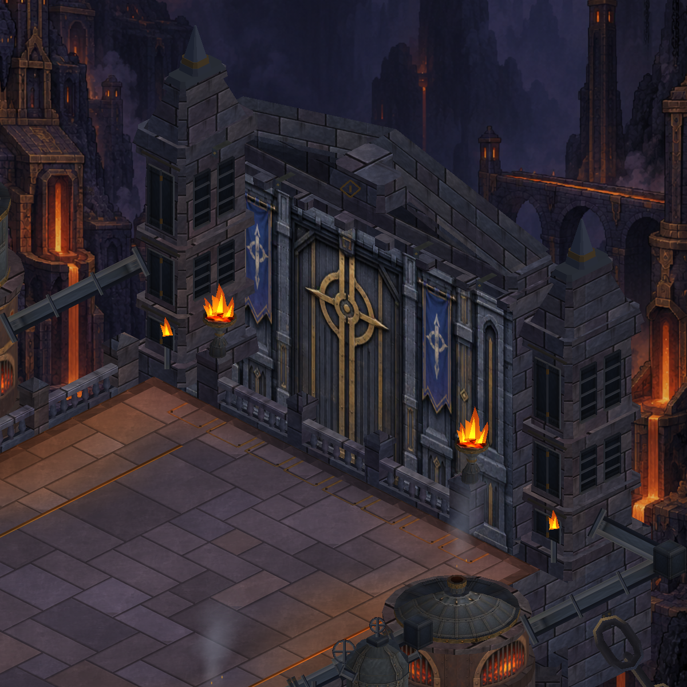

Dökümhane · Yaşayan ateşler
Alev uçları farklı ritimlerle hafifçe salınıyor. Tabanları kapta sabit. Oyunda duraklatma hareketi de durduruyor.
Gerçek Unity çekimlerinden altı karelik kısa tekrar; oyunun canlı görüntüsü değil.

Mevcut tek ateş çizim grubu kullanılıyor. Toplam 17 renderer / 80.344 vertex korunuyor.
Telefondaki giriş görüntüsü
Doğrulama notları